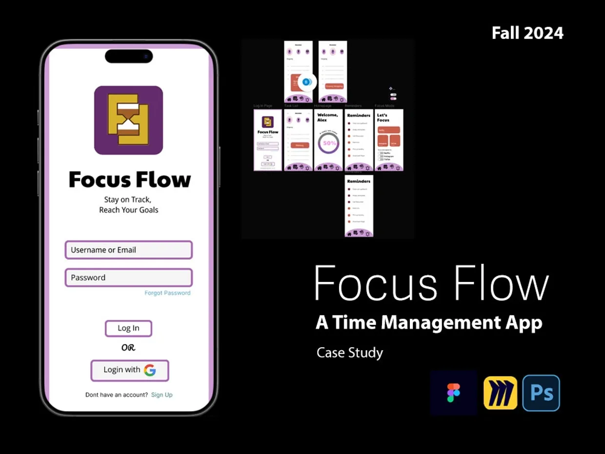
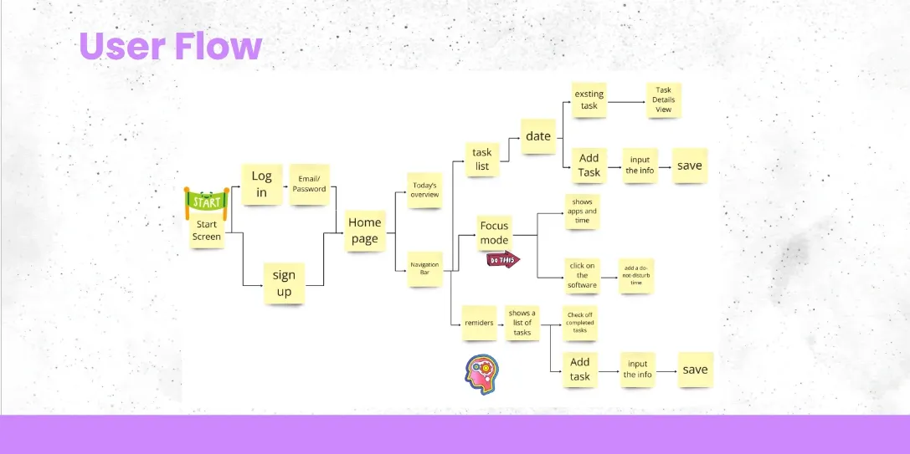
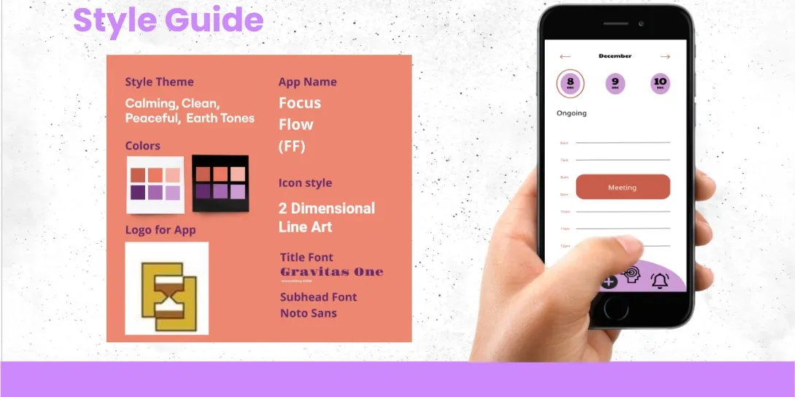

User Research
Supported interviews, persona development, and research synthesis to identify real productivity challenges.
UX/UI Case Study · Fall 2024
Focus Flow is a mobile productivity app created to help people organize tasks, reduce distractions, and build more intentional daily routines.

Project Overview
Focus Flow was developed by an interdisciplinary group of graduate Interaction Design students and BFA Graphic Design students. We combined user research, collaborative ideation, interface design, and usability feedback to create a focused mobile experience.
Our goal was not only to design another task app. We wanted to create a supportive tool that could fit naturally into work, school, and everyday life without adding more visual noise.
Esther · Carly · Noah · Yan · Bulli
My Contribution
Supported interviews, persona development, and research synthesis to identify real productivity challenges.
Helped shape navigation, task flows, screen relationships, and the overall mobile experience.
Contributed to visual hierarchy, consistency, icon direction, color decisions, and responsive screen layouts.
Collaborated on storytelling, critiques, final presentation materials, and communicating the design rationale.
User Journey
We used Miro to create a shared user flow that connected login, the home page, task lists, reminders, calendar views, and focus mode. This let the team work asynchronously while keeping the product direction aligned.

Interview users and understand their scheduling habits, distractions, and daily frustrations.
Identify the need for clear task organization, reminders, and a dedicated focus experience.
Explore concepts in Miro and compare possible flows before committing to interface screens.
Build the mobile experience in Figma and connect the most important user journeys.
Use critique and feedback to improve clarity, hierarchy, navigation, and consistency.
Visual Design
Purple became the main brand color because it communicates creativity, confidence, calm, and balance. Warm earth tones softened the experience and helped the interface feel more human.
The hourglass logo represents the passage of time, mindfulness, and the balance between productivity and rest. Simple line icons and clear typography reduced cognitive load across the app.

Interactive Prototype
Walk through the login, home screen, task management, reminders, and focus-mode experience directly in the interactive prototype.